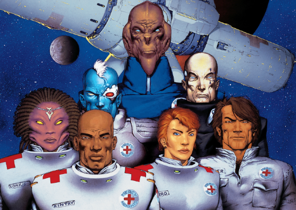

An ensemble cast staff a space hospital in a war zone. Wait, isn't that the setup for Medivac 318? Incongruously, one of the medics is Tor Cyan, who looks like Rogue Trooper - although initially there's no explanation of the link to the Rogueverse.
Art by Kevin Walker
| Story Title | Parts | Pages | w indicates a wraparound coverCovers | Year(s) | Issues | Writer | Artist | Colourist | Letterer |
|---|---|---|---|---|---|---|---|---|---|
| [Book 1] | 15 | + 15 credit pages91 | 1036: Kevin Walker 1041: Kevin Walker 2 | 1997 | Reprints: M313‑M314 (supplements)1033-1047 | John Tomlinson | Kevin Walker 1‑5 Andrew Currie 6‑10 Lee Sullivan 11‑15 various… | Alan Craddock | Ellie de Ville |
| Dead of Winter | 1 | + 0.5 credit pages10 | Kevin Walker1 | 1998 | Reprints: M314 (supplement)1124 | John Tomlinson | Neil Googe | Alan Craddock | Ellie de Ville |
| [Book 2] | 15 | 91 | 1133: Greg Staples 1136: Mark Harrison 1140: Trevor Hairsine 1147: Duncan Fegredo 4 | 1999 | Reprints: M314‑M316 (supplements)1133-1137, 1139-1148 | John Tomlinson | Trevor Hairsine 1‑5 Lee Sullivan 6‑10 Neil Googe 11‑15 various… | Chris Blythe | Ellie de Ville |
| year | episodes | pages |
| 1988 | 0 | 0 |
| 1989 | 0 | 0 |
| 1990 | 0 | 0 |
| 1991 | 0 | 0 |
| 1992 | 0 | 0 |
| 1993 | 0 | 0 |
| 1994 | 0 | 0 |
| 1995 | 0 | 0 |
| 1996 | 0 | 0 |
| 1997 | 15 | 91 |
| 1998 | 1 | 10 |
| 1999 | 15 | 91 |
| 2000 | 0 | 0 |
| 2001 | 0 | 0 |
| 2002 | 0 | 0 |
| 2003 | 0 | 0 |
| 2004 | 0 | 0 |
| 2005 | 0 | 0 |
| 2006 | 0 | 0 |
| 2007 | 0 | 0 |
| 2008 | 0 | 0 |